mean = 0.3
prob = mean
x = 0:1
plot(x, dbinom(x, size = 1, prob = prob), type = "h",
xlab = "Outcome", ylab = "Probability")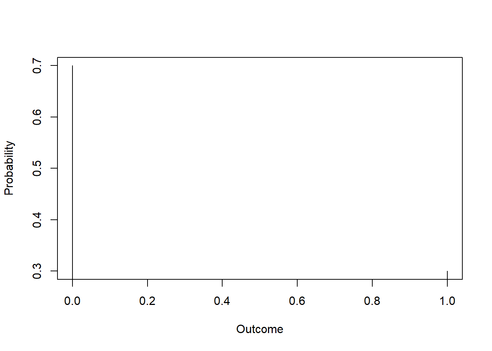
In this document I provide reference material for several distributions, including their mathematical formulae, examples of code and tips on when they might be relevant. There is also a section on how to construct zero-inflated distributions.
For each distribution I provide the default parameterization in R, but I also provide a inverse parameterization where we use the mean (\(\mu\)) as input, as we normally model the effect of covariates on the mean.
Six distributions for count data that cover the most common scenarios in ecology. Some guidance on how to choose (but also remember model selection as a general tool):
Bernoulli - Binary outcomes such as presence/absence or success/failure.
Binomial - Fixed number of binary outcomes.
Poisson - Counts of events in a fixed area, time, or sampling effort. Variance equal to mean.
Conway-Maxwell-Poisson - Count data with either underdispersion or overdispersion relative to the Poisson distribution.
Negative binomial - Overdispersed count data (variance > mean).
Beta binomial - Overdispersed count data (variance > mean). Also for repeated Binomial process where the probaility of success varies randomly across trials.
Base R uses the binomial functions with size = 1 to represent a Bernoulli distribution.
\[ \begin{aligned} \text{R}: &\quad \texttt{dbinom, pbinom, qbinom, rbinom} \quad (\texttt{size = 1}) \\ \text{Type}: &\quad \text{Discrete} \\ \text{Range}: &\quad x \in \{0,1\} \\ \text{Probability}: &\quad p^x(1-p)^{1-x} \\ \text{Parameters}: &\quad p\;(\texttt{prob}) = \text{probability of success} \\ \text{Mean}: &\quad E[x] = p \\ \text{Variance}: &\quad Var(X) = p(1-p) \\ \text{Inverse}: &\quad p = \mu \end{aligned} \]
mean = 0.3
prob = mean
x = 0:1
plot(x, dbinom(x, size = 1, prob = prob), type = "h",
xlab = "Outcome", ylab = "Probability")
\[ \begin{aligned} \text{R}: &\quad \texttt{dbinom, pbinom, qbinom, rbinom} \\ \text{Type}: &\quad \text{Discrete} \\ \text{Range}: &\quad x = 0, 1, \ldots, n \\ \text{Probability}: &\quad \binom{n}{x}p^x(1-p)^{n-x} \\ \text{Parameters}: &\quad n\;(\texttt{size}) = \text{number of trials};\quad p\;(\texttt{prob}) = \text{success probability} \\ \text{Mean}: &\quad E[x] = np \\ \text{Variance}: &\quad Var(X) = np(1-p) \\ \text{Inverse}: &\quad p = \mu/n \quad (\text{with } n \text{ fixed}) \end{aligned} \]
mean = 5
size = 20
prob = mean / size
x = 0:size
plot(x, dbinom(x, size = size, prob = prob), type = "h",
xlab = "Number of successes", ylab = "Probability")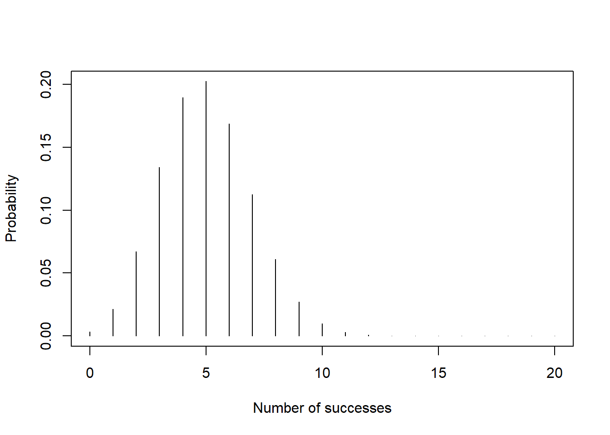
\[ \begin{aligned} \text{R}: &\quad \texttt{dpois, ppois, qpois, rpois} \\ \text{Type}: &\quad \text{Discrete} \\ \text{Range}: &\quad x = 0, 1, 2, \ldots \\ \text{Probability}: &\quad \frac{e^{-\lambda}\lambda^x}{x!} \\ \text{Parameters}: &\quad \lambda\;(\texttt{lambda}) = \text{event rate} \\ \text{Mean}: &\quad E[x] = \lambda \\ \text{Variance}: &\quad Var(X) = \lambda \\ \text{Inverse}: &\quad \lambda = \mu \end{aligned} \]
mean = 4
lambda = mean
x = 0:qpois(0.999, lambda = lambda)
plot(x, dpois(x, lambda = lambda), type = "h",
xlab = "Count", ylab = "Probability")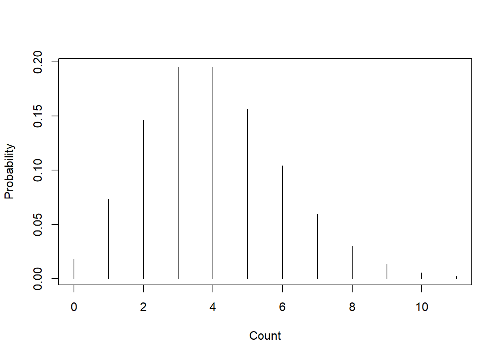
The Conway-Maxwell-Poisson distribution, often abbreviated COM-Poisson or CMP, extends the Poisson distribution by adding a dispersion parameter. It is useful when counts are more regular than a Poisson model allows (underdispersion) as well as when they are more variable (overdispersion). When \(\nu = 1\), it is exactly the Poisson distribution. Values of \(\nu > 1\) produce underdispersion, whereas values of \(0 < \nu < 1\) produce overdispersion.
Unlike the Poisson distribution, lambda is not generally the mean. The normalizing constant \(Z(\lambda, \nu)\) and therefore the mean have no simple closed form. The COMPoissonReg package calculates these quantities numerically; use ecmp() and vcmp() when you need the mean or variance for particular parameter values.
\[ \begin{aligned} \text{R}: &\quad \texttt{COMPoissonReg::dcmp, pcmp, qcmp, rcmp} \\ \text{Type}: &\quad \text{Discrete} \\ \text{Range}: &\quad x = 0, 1, 2, \ldots \\ \text{Probability}: &\quad \frac{\lambda^x}{(x!)^\nu Z(\lambda, \nu)} \\ \text{Normalizing constant}: &\quad Z(\lambda, \nu) = \sum_{j = 0}^{\infty}\frac{\lambda^j}{(j!)^\nu} \\ \text{Parameters}: &\quad \lambda\;(\texttt{lambda}) > 0 = \text{rate parameter};\quad \nu\;(\texttt{nu}) > 0 = \text{dispersion parameter} \\ \text{Mean}: &\quad E[X] = \lambda\frac{\partial}{\partial\lambda}\log Z(\lambda, \nu) \\ \text{Variance}: &\quad \operatorname{Var}(X) = \lambda\frac{\partial}{\partial\lambda}E[X] \\ \text{Inverse}: &\quad \lambda \text{ must be found numerically for a chosen } \mu \text{ and } \nu \end{aligned} \]
# Requires the COMPoissonReg package.
library(COMPoissonReg)
# nu > 1 gives a distribution that is less variable than a Poisson distribution.
lambda = 8
nu = 2
x = 0:qcmp(q = 0.999, lambda = lambda, nu = nu)
plot(x, dcmp(x = x, lambda = lambda, nu = nu), type = "h",
xlab = "Count", ylab = "Probability")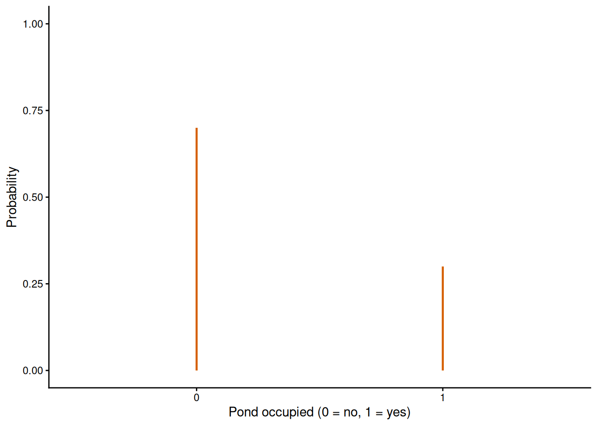
\[ \begin{aligned} \text{R}: &\quad \texttt{dnbinom, pnbinom, qnbinom, rnbinom} \\ \text{Type}: &\quad \text{Discrete} \\ \text{Range}: &\quad x = 0, 1, 2, \ldots \\ \text{Probability}: &\quad \frac{\Gamma(x+r)}{\Gamma(r)x!}p^r(1-p)^x \\ \text{Parameters}: &\quad r\;(\texttt{size}) = \text{dispersion};\quad p\;(\texttt{prob}) = \text{prob success} \\ \text{Mean}: &\quad E[x] = r(1-p)/p \\ \text{Variance}: &\quad Var(X) = \mu + \mu^2/r \\ \text{Inverse}: &\quad p = r/(r+\mu) \end{aligned} \]
mean = 8
size = 2
prob = size / (size + mean)
x = 0:qnbinom(0.999, size = size, prob = prob)
plot(x, dnbinom(x, size = size, prob = prob), type = "h",
xlab = "Count", ylab = "Probability")
These functions are available in the VGAM package. I recommend parameterizing from mean, size and a precision parameter (\(\kappa\) inverse of a scale, the larger it is the narrower the distribution).
\[ \begin{aligned} \text{R}: &\quad \texttt{dbetabinom.ab, pbetabinom.ab}\\ &\quad \texttt{qbetabinom.ab, rbetabinom.ab} \\ \text{Type}: &\quad \text{Discrete} \\ \text{Range}: &\quad x = 0, 1, \ldots, n \\ \text{Probability}: &\quad \binom{n}{x}\frac{B(x+\alpha,n-x+\beta)}{B(\alpha,\beta)} \\ \text{Parameters}: &\quad n\;(\texttt{size}) = \text{no. trials};\quad \alpha\;(\texttt{shape1}),\ \beta\;(\texttt{shape2}) = \text{shapes} \\ \text{Mean}: &\quad E[x] = n\frac{\alpha}{\alpha+\beta} \\ \text{Variance}: &\quad Var(X) = \frac{n\alpha\beta(\alpha+\beta+n)} {(\alpha+\beta)^2(\alpha+\beta+1)} \\ \text{Inverse}: &\quad \kappa = \alpha+\beta;\quad \alpha = \kappa\frac{\mu}{n};\quad \beta = \kappa\left(1-\frac{\mu}{n}\right) \end{aligned} \]
# Requires the VGAM package
library(VGAM)
mean = 5
size = 20
precision = 12
shape1 = precision * mean / size
shape2 = precision * (1 - mean / size)
x = 0:size
plot(x, dbetabinom.ab(x, size = size,
shape1 = shape1, shape2 = shape2),
type = "h", xlab = "Number of successes", ylab = "Probability")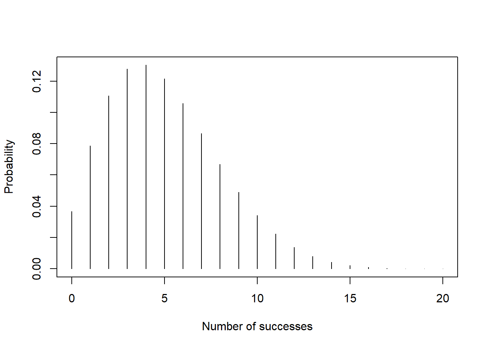
Seven distributions for continous data that cover the common scenarios in ecology (note that there is more diversity here than for count data). They are classified based on the values the random variable can take:
Unconstrained - Any real value (from \(-\infty\) to \(\infty\)).
Positive - Any positive real value (from \(0\) to \(\infty\)). Sometimes \(0\) is not included.
Constrained - Any real value within a range \([a,b]\) (from \(a\) to \(b\)). Sometimes the edges (i.e., \(a\) and \(b\)) are not included.
Other distributions that show up in Ecology but I did not cover include Cauchy, Gompertz or Power laws.
Normal - Symmetric distribution. Arises from addition of many small, independent random processes. The most common distribution, especially for measurement error but a lot ecological variation is not Normal!
T - Like a Normal distribution but with thicker tails. Useful when dealing with a few extreme values (i.e., robustness against outliers).
All distributions in this category are assymetric, especially when there is high probability close to 0.
Exponential - Maximum at \(0\). Distribution of waiting times for a single event to happen if likelikood of the event per unit of time is constant.
Log-Normal -\(X\) follows a Log-Normal if \(\text{log}(X)\) follows a Normal distribution. Arises from multiplication of many small, independent random processes. Quite common for processes involving exponential growth.
Gamma - Distribution of waiting times for a certain number of events to happen (same assumption as exponential). Very similar shape to Log-Normal.
Weibull - Distribution of waiting times for a a single event to happen assuming the likelihood of the event per unit of time is not constant.
Uniform - All values within the range are equally likely.
Beta - Values within the range are not equally likely. This distribution can be symmetric or assymetric (left skewed or right skewed) depending on parameter values.
\[ \begin{aligned} \text{R}: &\quad \texttt{dunif, punif, qunif, runif} \\ \text{Type}: &\quad \text{Continuous} \\ \text{Range}: &\quad \texttt{min} \leq x \leq \texttt{max} \\ \text{Density}: &\quad \frac{1}{b-a},\quad a \leq x \leq b \\ \text{Parameters}: &\quad a\;(\texttt{min}) = \text{lower bound};\quad b\;(\texttt{max}) = \text{upper bound} \\ \text{Mean}: &\quad E[X] = (a+b)/2 \\ \text{Variance}: &\quad Var(X) = (b-a)^2/12 \\ \end{aligned} \]
min = 1
max = 3
curve(dunif(x, min = min, max = max), min, max)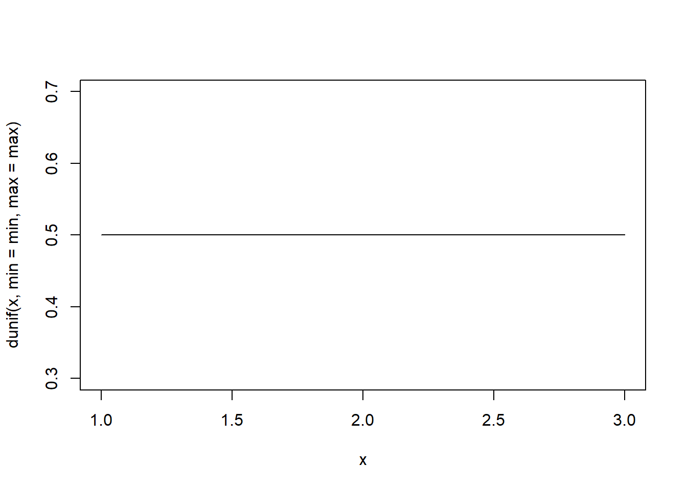
\[ \begin{aligned} \text{R}: &\quad \texttt{dnorm, pnorm, qnorm, rnorm} \\ \text{Type}: &\quad \text{Continuous} \\ \text{Range}: &\quad -\infty < x < \infty \\ \text{Density}: &\quad \frac{1}{\sigma\sqrt{2\pi}} \exp\left[-\frac{(x-\mu)^2}{2\sigma^2}\right] \\ \text{Parameters}: &\quad \mu\;(\texttt{mean}) = \text{mean};\quad \sigma\;(\texttt{sd}) = \text{standard deviation} \\ \text{Mean}: &\quad E[X] = \texttt{mean} \\ \text{Variance}: &\quad Var(X) = \texttt{sd}^2 \\ \end{aligned} \]
mean = 2
sd = 0.5
curve(dnorm(x, mean = mean, sd = sd), mean - 4 * sd, mean + 4 * sd)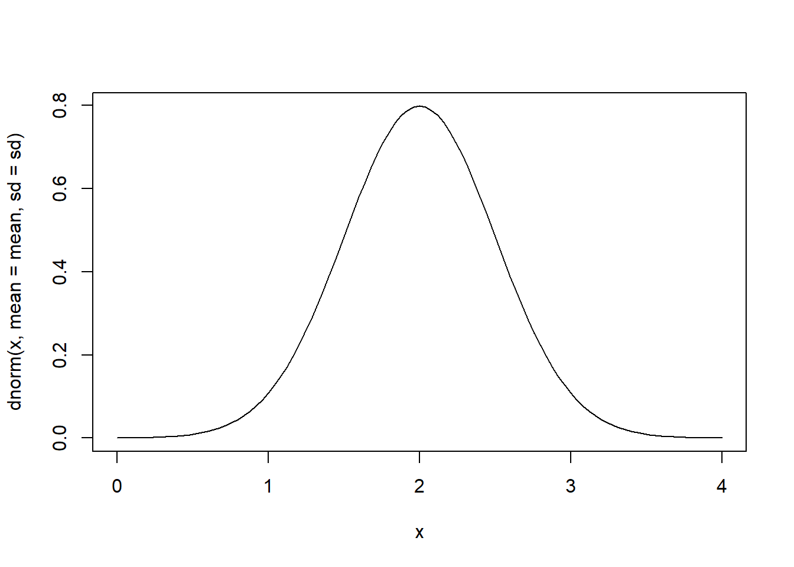
The t-distribution functions built into R are standardized (i.e., \(\mu = 0\) and \(\sigma = 1\)) and only depends on the degrees of freedom (\(\nu\)). If we want to change then we need to define our random variable as \(X = \mu + s \cdot T\), where \(T\) is the standardized t. Note that \(s\) is a scale parameter and it will be larger than \(\sigma\) when \(\nu > 2\).
\[ \begin{aligned} \text{R}: &\quad \texttt{dt, pt, qt, rt} \quad \text{Type}: &\quad \text{Continuous} \\ \text{Range}: &\quad -\infty < x < \infty \\ \text{Density}: &\quad \frac{\Gamma((\nu+1)/2)}{s\sqrt{\nu\pi}\,\Gamma(\nu/2)} \left[1+\frac{(x-\mu)^2}{\nu s^2}\right]^{-(\nu+1)/2} \\ \text{Parameters}: &\quad \mu\;(\text{location});\quad s\;(\text{scale})>0;\quad \nu\;(\texttt{df})>0 \\ \text{Mean}: &\quad \operatorname{E}[X]=\mu \quad (\nu>1) \\ \text{Variance}: &\quad \operatorname{Var}(X)=s^2\frac{\nu}{\nu-2} \quad (\nu>2) \\ \text{Inverse}: &\quad s=\sigma\sqrt{\frac{\nu-2}{\nu}} \quad (\nu>2) \end{aligned} \]
mean = 2
df = 5
sd = 0.5
scale = sd * sqrt((df - 2) / df)
curve(dt((x - mean) / scale, df = df) / scale,
mean - 4 * sd, mean + 4 * sd)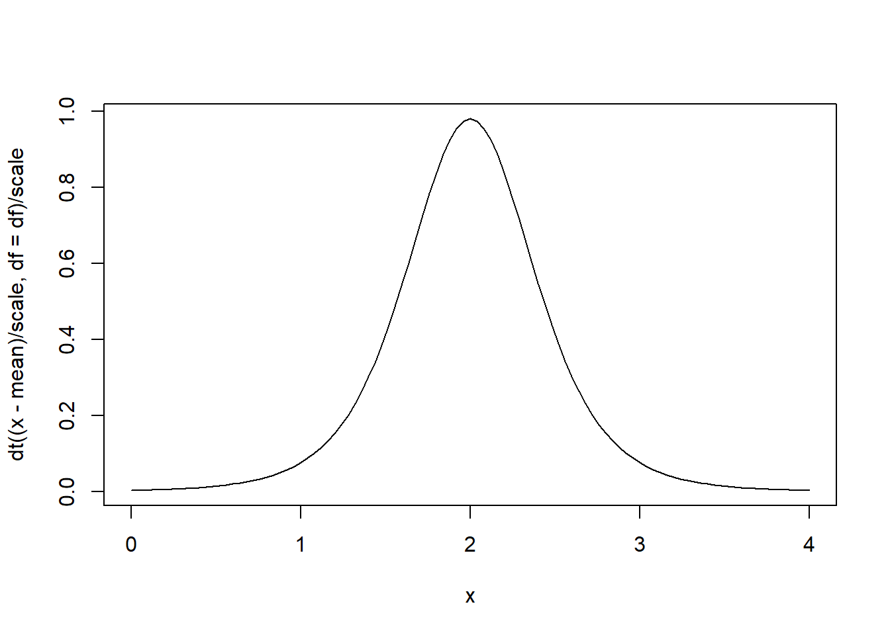
\[ \begin{aligned} \text{R}: &\quad \texttt{dexp, pexp, qexp, rexp} \\ \text{Type}: &\quad \text{Continuous} \\ \text{Range}: &\quad \text{Positive} \\ \text{Density}: &\quad \lambda e^{-\lambda x} \\ \text{Parameters}: &\quad \lambda\;(\texttt{rate})=\ \text{Rate} \\ \text{Mean}: &\quad E[x] = 1/\lambda \\ \text{Variance}: &\quad Var(X) = 1/\lambda^2 \\ \text{Inverse}: &\quad \lambda = 1/\mu \end{aligned} \]
mean = 2
rate = 1/mean
curve(dexp(x, rate = rate), 0, 5)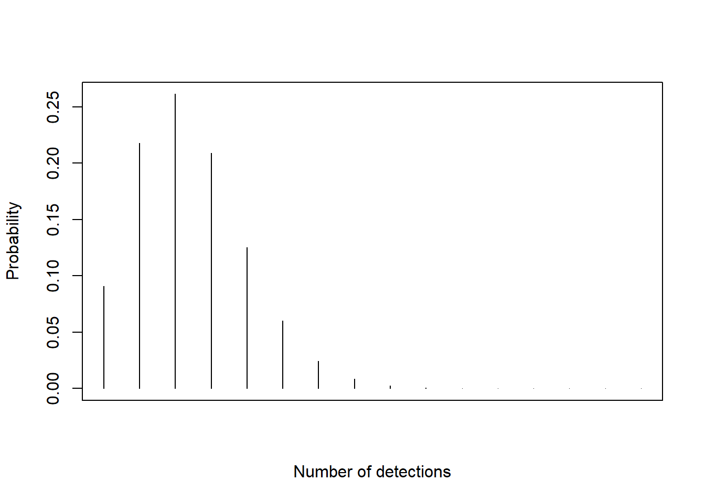
R’s rate and scale are reciprocals: scale = 1/rate. I recommend to parameterize it from the mean and either rate or scale.
\[ \begin{aligned} \text{R}: &\quad \texttt{dgamma, pgamma, qgamma, rgamma} \\ \text{Type}: &\quad \text{Continuous} \\ \text{Range}: &\quad x \geq 0 \\ \text{Density}: &\quad \frac{\texttt{rate}^{\texttt{shape}}}{\Gamma(\texttt{shape})} x^{\texttt{shape}-1}e^{-\texttt{rate}x} \\ \text{Parameters}: &\quad k\;(\texttt{shape}) = \text{shape};\quad r\;(\texttt{rate}) = \text{rate} \\ \text{Mean}: &\quad E[x] = k/r \\ \text{Variance}: &\quad Var(X) = k/r^2 \\ \text{Inverse}: &\quad r = k/\mu \quad (\text{equivalently, } \texttt{scale}=\mu/k) \end{aligned} \]
mean = 2
shape = 3
rate = shape / mean
curve(dgamma(x, shape = shape, rate = rate), 0, 6)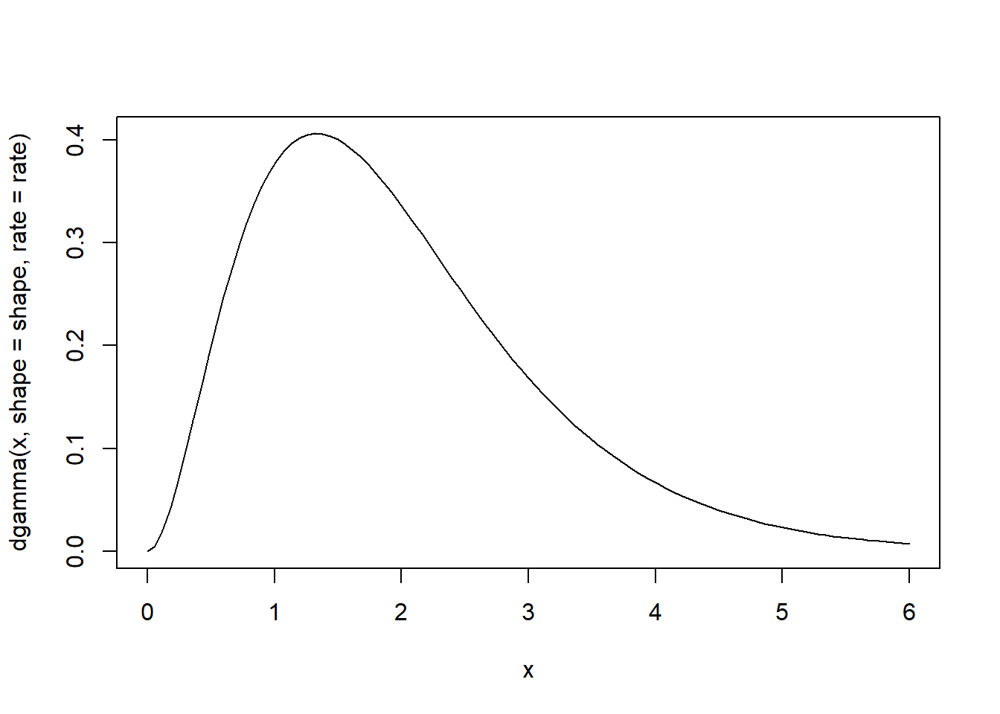
\[ \begin{aligned} \text{R}: &\quad \texttt{dlnorm, plnorm, qlnorm, rlnorm} \\ \text{Type}: &\quad \text{Continuous} \\ \text{Range}: &\quad x > 0 \\ \text{Density}: &\quad \frac{1}{x\,s\sqrt{2\pi}} \exp\left[-\frac{(\log x-m)^2}{2s^2}\right] \\ \text{Parameters}: &\quad m\;(\texttt{meanlog}) = \text{mean of log}(X);\quad s\;(\texttt{sdlog}) = \text{SD of log}(X) \\ \text{Mean}: &\quad E[x] = \exp(m+s^2/2) \\ \text{Variance}: &\quad Var(X) = \left[\exp(s^2)-1\right]\exp(2m+s^2) \\ \text{Inverse}: &\quad m = \log(\mu)-s^2/2 \end{aligned} \]
mean = 2
sdlog = 0.4
meanlog = log(mean) - sdlog^2 / 2
curve(dlnorm(x, meanlog = meanlog, sdlog = sdlog), 0, 6)
I recommend to parameterize it from the mean and a precision parameter (the larger it is the narrower the distribution). \[ \begin{aligned} \text{R}: &\quad \texttt{dbeta, pbeta, qbeta, rbeta} \\ \text{Type}: &\quad \text{Continuous} \\ \text{Range}: &\quad 0 \leq x \leq 1 \\ \text{Density}: &\quad \frac{x^{\alpha-1}(1-x)^{\beta-1}}{B(\alpha,\beta)} \\ \text{Parameters}: &\quad \alpha\;(\texttt{shape1}),\quad \beta\;(\texttt{shape2}) = \text{shape parameters} \\ \text{Mean}: &\quad E[x] = \alpha/(\alpha+\beta) \\ \text{Variance}: &\quad Var(X) = \frac{\alpha\beta}{(\alpha+\beta)^2(\alpha+\beta+1)} \\ \text{Inverse}: &\quad \kappa=\alpha+\beta;\quad \alpha=\mu\kappa;\quad \beta=(1-\mu)\kappa \end{aligned} \]
mean = 0.4
concentration = 10
shape1 = mean * concentration
shape2 = (1 - mean) * concentration
curve(dbeta(x, shape1 = shape1, shape2 = shape2), 0, 1)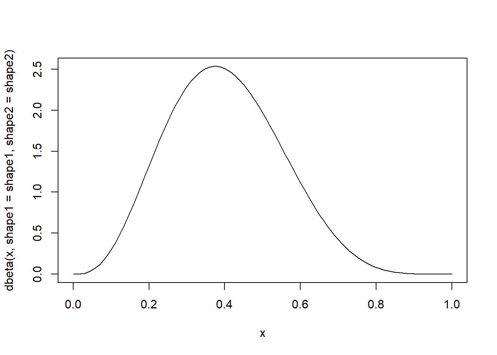
Unlike in the Gamma distribution, the shape and scale are not reciprocal here. I show below how to parameterize from the mean and shape. \[ \begin{aligned} \text{R}: &\quad \texttt{dweibull, pweibull, qweibull, rweibull} \\ \text{Type}: &\quad \text{Continuous} \\ \text{Range}: &\quad x \geq 0 \\ \text{Density}: &\quad \frac{k}{\lambda}\left(\frac{x}{\lambda}\right)^{k-1} \exp\left[-\left(\frac{x}{\lambda}\right)^k\right] \\ \text{Parameters}: &\quad k\;(\texttt{shape})>0;\quad \lambda\;(\texttt{scale})>0 \\ \text{Mean}: &\quad E[x] = \lambda\Gamma(1+1/k) \\ \text{Variance}: &\quad Var(X) = \lambda^2\left[\Gamma(1+2/k)-\Gamma(1+1/k)^2\right] \\ \text{Inverse}: &\quad \lambda = \frac{\mu}{\Gamma(1+1/k)} \end{aligned} \]
mean = 2
shape = 1.5
scale = mean / gamma(1 + 1 / shape)
curve(dweibull(x, shape = shape, scale = scale), 0, 6)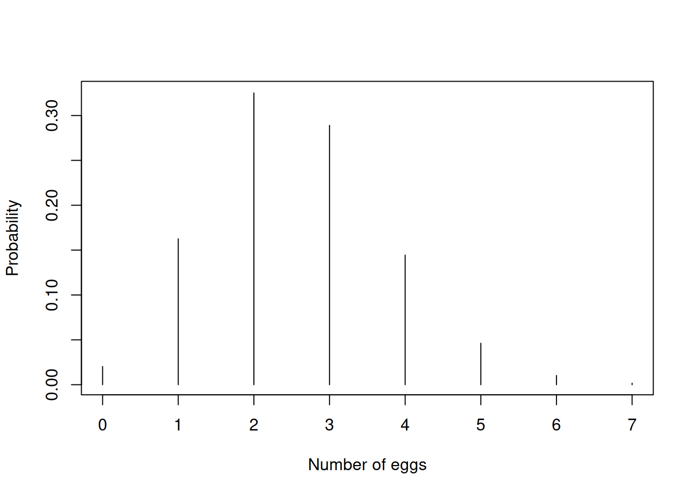
These are distributions of multiple random variables that are not independent. They appear in two main context:
Quantifying uncertainty or variation in parameters (typically the multivariate normal).
Modelling multiple types of observations that are ecologically correlated.
Multinomial - Generalizes the Binomial distribution to \(K\) categories. The counts across categories must sum to the fixed number of trials \(N\). For example counts across several species or habitat categories when the total number of observations is fixed.
Multivariate Normal - Generalizes the Normal distribution to \(K\) correlated random variables. Each variable is characterized by its mean and standard deviation but we also defined a correlation coefficient for each pair of variables. The basis of multivariate statistics for unconstrained, continuous data and also shows up when quantifying uncertainty/variation in parameters or when modelling time series with autocorrelation.
Dirichlet - Generalizes the Beta distribution to \(K\) correlated random variables. Each of the random variables is constrained between 0 and 1 but also, the sum of all the variables is always equal to 1. Useful to model proportions of a community across species or partitioning of biomass across different compartments, soil texture, etc.
This area of probability is (relatively) less explored. If you are really interested in multivariate modelling, I suggest to take a look into copulas but note that this is way beyond the scope of this course and a very rare skill among ecological modelers, so it might be too hard to tackle now.
\[ \begin{aligned} \text{R}: &\quad \texttt{dmultinom} \\ \text{Type}: &\quad \text{Discrete, multivariate} \\ \text{Range}: &\quad x_i \in \{0,1,\ldots,n\},\quad \sum_{i=1}^K x_i=n \\ \text{Probability}: &\quad \frac{n!}{\prod_{i=1}^K x_i!}\prod_{i=1}^K p_i^{x_i} \\ \text{Parameters}: &\quad n\;(\texttt{size}) = \text{number of trials};\quad p_i\;(\texttt{prob}) = \text{probability of category }i,\quad \sum_i p_i=1 \\ \text{Mean}: &\quad \mu_i = np_i \\ \text{Variance}: &\quad \operatorname{Var}(X_i)=np_i(1-p_i) \\ \text{Covariance}: &\quad \operatorname{Cov}(X_i,X_j)=-np_ip_j,\quad i\ne j \\ \text{Inverse}: &\quad p_i = \mu_i/n,\quad \sum_i\mu_i=n \end{aligned} \]
means = c(5, 8, 7)
size = sum(means)
prob = means / size
x1 = 0:size
marginal = vapply(x1, function(a) {
x2 = 0:(size - a)
sum(vapply(x2, function(b) {
dmultinom(c(a, b, size - a - b), size = size, prob = prob)
}, numeric(1)))
}, numeric(1))
plot(x1, marginal, type = "h",
xlab = "Count in category 1", ylab = "Probability")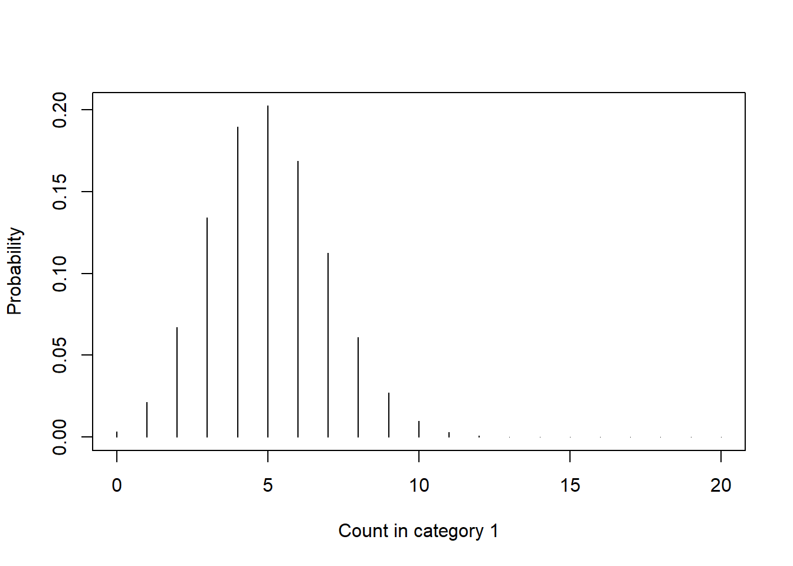
\[ \begin{aligned} \text{R}: &\quad \texttt{MASS::mvrnorm};\quad \texttt{mvtnorm::dmvnorm, pmvnorm, rmvnorm} \\ \text{Type}: &\quad \text{Continuous, multivariate} \\ \text{Range}: &\quad \mathbf{x}\in\mathbb{R}^K \\ \text{Density}: &\quad \frac{1}{(2\pi)^{K/2}|\boldsymbol{\Sigma}|^{1/2}} \exp\left[ -\frac{1}{2}(\mathbf{x}-\boldsymbol{\mu})^\mathsf{T} \boldsymbol{\Sigma}^{-1}(\mathbf{x}-\boldsymbol{\mu}) \right] \\ \text{Parameters}: &\quad \boldsymbol{\mu}\;(\texttt{mu}) = \text{mean vector};\quad \boldsymbol{\Sigma}\;(\texttt{Sigma}) = \text{covariance matrix} \\ \text{Mean}: &\quad \operatorname{E}[\mathbf{X}]=\boldsymbol{\mu} \\ \text{Covariance}: &\quad \operatorname{Cov}(\mathbf{X})=\boldsymbol{\Sigma} \\ \text{Inverse}: &\quad \Sigma_{ii}=s_i^2;\quad \Sigma_{ij}=\rho_{ij}s_i s_j\quad(i\ne j) \end{aligned} \]
library(MASS) # Install it first
means = c(2, 5)
sds = c(0.5, 1)
correlation = matrix(c(1, 0.6,
0.6, 1), nrow = 2)
Sigma = diag(sds) %*% correlation %*% diag(sds)
draws = mvrnorm(n = 5000, mu = means, Sigma = Sigma)
pairs(draws)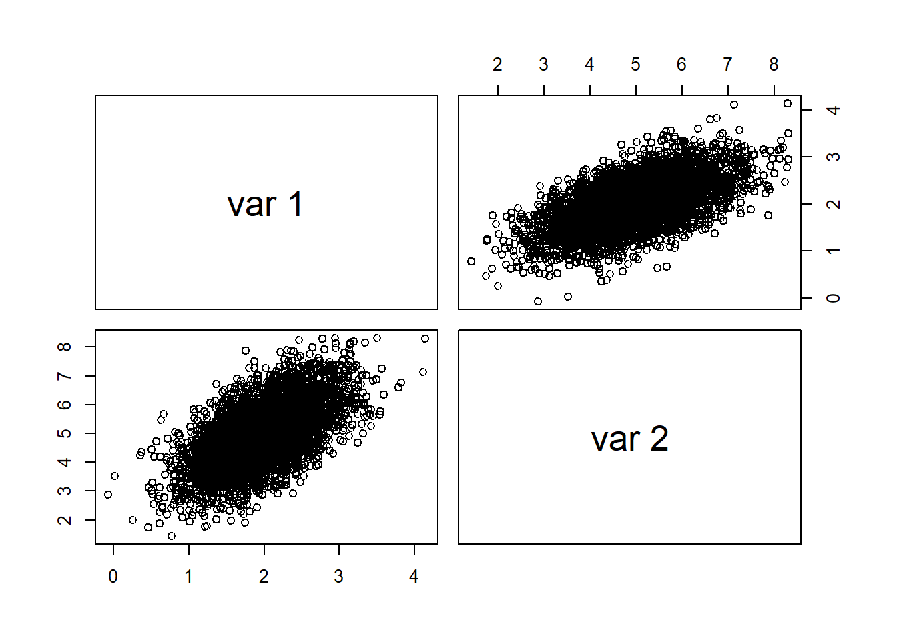
Need to use the gtools package (only density and random sampler are available, but that is enough for this course!).
\[ \begin{aligned} \text{R}: &\quad \texttt{ddirichlet, rdirichlet} \\ \text{Type}: &\quad \text{Continuous, multivariate} \\ \text{Range}: &\quad x_i>0,\quad \sum_{i=1}^K x_i=1 \\ \text{Density}: &\quad \frac{\Gamma(\alpha_0)}{\prod_{i=1}^K\Gamma(\alpha_i)} \prod_{i=1}^K x_i^{\alpha_i-1}, \quad \alpha_0=\sum_{i=1}^K\alpha_i \\ \text{Parameters}: &\quad \alpha_i>0\;(\texttt{alpha}) = \text{shape parameters} \\ \text{Mean}: &\quad \mu_i=\alpha_i/\alpha_0 \\ \text{Variance}: &\quad \operatorname{Var}(X_i)=\frac{\mu_i(1-\mu_i)}{\alpha_0+1} \\ \text{Covariance}: &\quad \operatorname{Cov}(X_i,X_j)=\frac{-\mu_i\mu_j}{\alpha_0+1},\quad i\ne j \\ \text{Inverse}: &\quad \alpha_0=\kappa;\quad \alpha_i=\kappa\mu_i \end{aligned} \]
library(gtools) # Install it first!
means = c(0.2, 0.3, 0.5)
concentration = 12
alpha = concentration * means
draws = rdirichlet(n = 5000, alpha = alpha)
pairs(draws)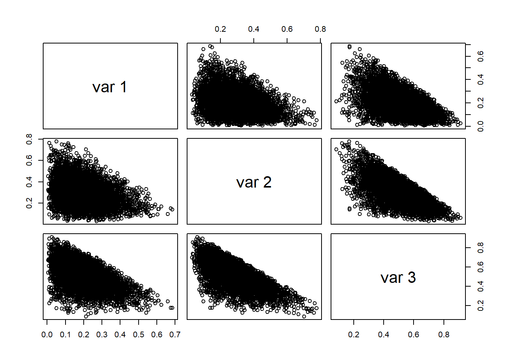
A zero-inflated distribution is a mixture of two distributions:
A Bernoulli distribution associated to a binary process.
Any other distribution (discrete of continuous) that may or may not contain zeros.
The idea is that each distribution in the mixture represents a different process. For example, in the seed predation data we work with in the course, there is a probability that the predators does not find the little dishes with seeds (\(p_{0}\)). That is represented by the Bernoulli distribution mentioned above. If a predator finds a dish with seeds, it can eat a variable number of seeds (from zero to as many seeds as there are available) depending on how hungry it is and its foraging behaviour.
A zero-inflated version of a mass or density function \(p(x)\) is going to look like this:
\[ \begin{aligned} p_{\text{inf}}(x) &= \begin{cases} p_{\text{0}} + &(1 - p_{\text{0}})p(0), & x = 0,\\ &(1- p_{\text{0}})p(x), & x\gt 0. \end{cases} \end{aligned} \]
Notice how there are two terms for \(x = 0\), one comes from the Bernoulli distribution (\(p_0\)) and the other one comes from the original (non-inflated) distribution (\(p(0)\)). Also notice how the original distribution has to be scaled by a factor \((1- p_{\text{0}})\). This is to ensure, as always, that probabilities add up to 1.
There might be packages in R that implement some zero-inflated distributions but we can easily implement our own. Below is an example of how to define the dpqr functions for a zero-inflated negative binomial.
# The mass/density function you will use for the likelihood, including log
dzinbinom = function(x, size, ..., pzero, log = FALSE) {
baseline = dnbinom(x, size = size, ..., log = FALSE)
result = (1 - pzero) * baseline
result = ifelse(x == 0, pzero + result, result)
if (log) log(result) else result
}
# The random number generator for sampling
rzinbinom = function(n, size, ..., pzero) {
# Original distribution
result = rnbinom(n, size = size, ...)
# Bernoulli distribution
result[runif(length(result)) < pzero] = 0
result
}
# Cumulative probability for tail probabilities and p-values
pzinbinom = function(q, size, ..., pzero,
lower.tail = TRUE, log.p = FALSE) {
baseline = pnbinom(q, size = size, ...,
lower.tail = TRUE, log.p = FALSE)
result = ifelse(q < 0, 0, pzero + (1 - pzero) * baseline)
if (!lower.tail) result = 1 - result
if (log.p) log(result) else result
}
# Quantile function (assuming 0 < pzero < 1)
qzinbinom = function(p, size, ..., pzero, lower.tail = TRUE) {
# Switch between lower or upper tail
if (!lower.tail) p = 1 - p
# Quantile in the original distribution
baseline_p = (p - pzero) / (1 - pzero)
baseline_q = qnbinom(baseline_p, size = size, ...)
# Adjust for zero inflation
cdf_at_zero = pzero + (1 - pzero)*pnbinom(0, size = size, ..., lower.tail = TRUE)
ifelse(p <= cdf_at_zero, 0, baseline_q)
}
# Example
mean = 8
size = 2
prob = size / (size + mean)
pzero = 0.25
x = 0:qzinbinom(0.999, size = size, prob = prob, pzero = pzero)
plot(x, dzinbinom(x, size = size, prob = prob, pzero = pzero),
type = "h", xlab = "Count", ylab = "Probability")
pzinbinom(0:10, size = size, prob = prob, pzero = pzero) [1] 0.2800000 0.3280000 0.3856000 0.4470400 0.5084800 0.5674624 0.6225126
[8] 0.6728443 0.7181428 0.7584081 0.7938416qzinbinom(c(0.5, 0.9), size = size, prob = prob, pzero = pzero)[1] 4 15rzinbinom(10, size = size, prob = prob, pzero = pzero) [1] 7 2 21 8 13 0 18 4 12 0